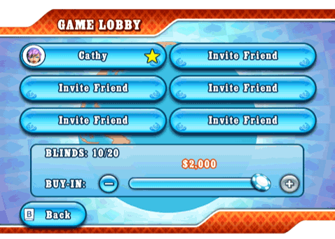

21 |
In-Game Chat & Invitations |
 |
|
When playing online, you will be able to select from a list of predefined chat messages that you can send to bluff, heckle, or congratulate your online opponents. To access the in-game chat menu, select the Chat icon at the bottom right corner of the screen. If you do not wish to receive chat messages, you can switch them OFF from the ‘Options’ section of the in-game menu.
 Selecting the in-game Chat icon will also bring up the ‘Invite Friends’ menu, which is a mini-version of your Friend Roster. You will be able to invite Friends as long as the game is not a Friends-only game hosted by another player. Incoming invitations to join a Friends game will come as a chat message with a confirmation icon. Game Lobby  Before a multiplayer game starts, players are gathered in the lobby. In Worldwide games, anyone can invite their Friends as long as there are available slots. To do so, simply select any slot and a mini-version of your Friend Roster will appear. For cash games, the buy-in is paid during the lobby. Whenever you are done, you can select the ‘ready’ icon to notify the host and other players of your status. However, remember that the host can start the game anytime, regardless of your status. In such cases, the highest buy-in you can afford will be automatically chosen. Only the host can reserve slots in Worldwide games or invite people in Friends-only games. Tournament games can only be started when all players have gathered. |
 |
 |
 |